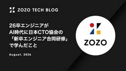
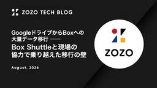
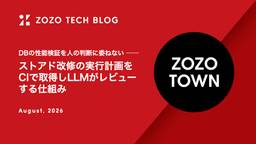
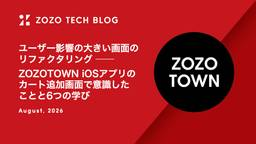

ZOZO TECH BLOG
https://techblog.zozo.com/
ZOZO TECH BLOG
フィード
日本語CLIPを活用した検索ランキング学習の精度改善検証 2
2
ZOZO TECH BLOG
はじめに こんにちは、検索基盤部の検索グロースブロックに所属するしゅがーです。普段はZOZOTOWNの検索体験を改善する施策の企画と開発を担当しています。 近年、CLIPをはじめとするマルチモーダルモデルの登場によって、画像とテキストを同じ特徴空間で比較できるようになりました。一方で、検索結果の並び順を学習するランキング学習（LTR: Learning to Rank）では、行動実績やテキストに基づく特徴量を使うことが一般的です。画像の情報をどう取り込むかには、まだ検討の余地があります。 本記事では、日本語CLIPモデルで算出した商品画像と検索クエリの類似度をランキング学習モデルの特徴量として…
1日前
チームの人数が減っても仕事を回す ── AIとGitHub Actionsによる開発ワークフロー改善 1
ZOZO TECH BLOG
はじめに こんにちは、WEAR開発部Webブロックの吉田です。普段はWEARの新機能開発や運用改善を担当しています。 Webブロックでは、異動によりメンバーが減ったことで、開発ワークフローのさまざまな工程で効率化が求められていました。本記事では、AIエージェントとGitHub Actionsによるワークフローの改善を取り入れ、アイデア出しやプルリクエストレビュー、エラー監視、KPTを改善した取り組みを紹介します。
1日前

Thompson Samplingのコールドスタート対策 ── 過去の実績データを事前分布に活かす
ZOZO TECH BLOG
はじめに こんにちは、検索基盤部 検索グロースブロックの広渡です。検索グロースブロックでは、ZOZOTOWNのある施策において、ユーザーに表示するコンテンツを複数の候補の中から選んで配信しています。どの候補がユーザーの反応（クリックなどのエンゲージメント）を最も得られるかは事前にわかりません。そこで、配信結果から学習しながら最適な候補に配信を寄せていくMulti-Armed Bandit（MAB）、なかでもThompson Samplingの活用を検討・検証しています。 MABは、広告配信のクリエイティブ選択・検索結果ページに差し込むレコメンドモジュールの出し分け・アプリのホーム画面のコンテン…
2日前

26卒エンジニアがAI時代に日本CTO協会の「新卒エンジニア合同研修」で学んだこと 4
ZOZO TECH BLOG
はじめに こんにちは。技術戦略部CTOブロックのikkouです。ZOZOでは毎年、独自の新卒研修を実施しています。さらに昨年からは、日本CTO協会の新卒エンジニア合同研修にも参加しています。参加は任意として、興味を持つ研修を自身で選択できるようにしました。本年度は2名の新卒エンジニアが参加しました。本記事では参加者によるレポートをお伝えします。 目次 はじめに 目次 日本CTO協会の新卒エンジニア合同研修とは 第1回：関係の質を上げるファシリテーション 第2回：Google Cloudで実現するクラウドネイティブ・アーキテクチャ 第3回：エンジニアの働き方とキャリア論 第4回：Codexを使っ…
2日前

GoogleドライブからBoxへの大量データ移行 ── Box Shuttleと現場の協力で乗り越えた移行の壁
ZOZO TECH BLOG
はじめに こんにちは、コーポレートエンジニアリング部のてぃーです。普段はGoogle WorkspaceやBox、SlackといったSaaS製品のアカウント管理や運用改善を担当しています。 当社では、Googleドライブを運用する中で生じていたセキュリティ面・ガバナンス面の課題や、利用者からのMicrosoft系ファイルの機能要望を解決するため、Boxを導入しました。 しかし、ただBoxを導入しても、業務データがBox上になければ課題は解決できません。そこで私の所属する部署では2024年5月より、GoogleドライブからBoxへのデータ移行に取り組んでいます。 一般的に、異なるシステム間のデー…
5日前

DBの性能検証を人の判断に委ねない ── ストアド改修の実行計画をCIで取得しLLMがレビューする仕組み 4
ZOZO TECH BLOG
はじめに こんにちは、SRE部カート決済SREブロックの伊藤（@_itito_）です。普段はZOZOTOWNのカート決済機能のリプレイス・運用・保守に携わっています。また、データベース（以下DB）領域でのテックリードを務めており、DBREとしてDB周りの運用・保守・構築に関わっています。 ZOZOTOWNでは以前からリプレイスを進めており、SQL Serverを中心としていたDB構成も、マイクロサービス化に伴ってAurora MySQLなどへ分割されてきました。 かつてはビジネスロジックの多くを、SQL Serverのストアドプロシージャ（以下、ストアド）が担っていました。データの近くで処理す…
5日前
WEARのあいまい検索を支えるOpenSearchハイブリッド検索 ── ベクトル量子化・暖気機構・スコア調整の実践 7
ZOZO TECH BLOG
はじめに こんにちは、WEAR開発部バックエンドブロックの小山です。普段は弊社サービスであるWEARのバックエンド開発を担当しています。 WEARの投稿検索（フリーワード検索）では、OpenSearchを検索基盤として利用しています。従来の検索方法では、ユーザーが入力するクエリの表記ゆれや誤字・略称により、適切な検索結果を返せないケースがありました。この課題を解決するため、全文検索とベクトル検索を組み合わせたハイブリッド検索を導入しました。しかし、導入の過程ではストレージの肥大化やレイテンシの増加、検索精度のチューニングといった技術的課題に直面しました。本記事では、これらの課題と解決に至るまで…
6日前

ユーザー影響の大きい画面のリファクタリング ── ZOZOTOWN iOSアプリのカート追加画面で意識したことと6つの学び 3
ZOZO TECH BLOG
はじめに こんにちは、ZOZOTOWN開発1部iOSブロックのぎゅです（@kyuriza62）。ZOZOに入社して3年目で、普段はZOZOTOWN iOSアプリの新機能の開発や、Storyboard/XIB形式の既存画面をSwiftへ置き換える作業などを担当しています。これまでもリファクタリングは担当してきましたが、影響範囲の大きい画面を扱った経験はありませんでした。 ZOZOTOWNのiOSアプリには、アプリ内のさまざまな導線からアクセスされる「カート追加画面」があります。今回は、このカート追加画面の実装を、ZOZOTOWN iOSチームで運用しているMVVM + Repositoryアーキ…
6日前
パーソナライズ配信ジョブの負荷対策3選 ── うまくいった改善、見送った改善 3
ZOZO TECH BLOG
はじめに こんにちは、MA部MAシステム開発ブロックのまんさくです。普段はマーケティングオートメーションシステムの開発・運用を担当しています。 ZOZOTOWNでは、アプリのPush通知やLINE、メールでキャンペーンを配信しています。MA部は、これらの配信を担うマーケティングオートメーション（MA）システムを開発しています。 配信には大きく2種類あります。特定の会員セグメントへ一括で送る「バッチ配信」と、会員一人ひとりの行動に合わせて送る「パーソナライズ配信」です。本記事で扱うのは後者です。その配信可否を決める前段階のジョブについて、DB・ジョブ起動基盤・メッセージングの3つの層で改善に取り…
7日前
Istio Ambient MeshのPoCで見えた現時点の最適なアーキテクチャ 5
ZOZO TECH BLOG
はじめに こんにちは、SRE部プラットフォームSREブロックのさかべっちです。 ZOZOTOWNのプラットフォーム基盤では、サービスメッシュとしてIstioをSidecarモデルで運用しています。本記事では、Istio Data Planeのリアーキテクチャに向けて実施した、Ambient MeshのPoCとNative Sidecar導入の取り組みをご紹介します。 Ambient Meshはすでに一般提供（GA）されていますが、大規模な本番基盤での移行可否を判断できる材料や事例はまだ多くありません。私たちはPoCで機能・性能を体系的に評価しました。そして、その実測データをもとに「現時点の最適…
7日前

ループエンジニアリング実践：プロンプトチューニングをClaude Codeに任せてみた
ZOZO TECH BLOG
はじめに こんにちは、データサイエンス部の大川（@o_tomo03）です。私たちは、WEARにおける「似合う」をユーザーに届けるため、LLMやマルチモーダルAIを活用してコーディネートの特徴抽出や似合うに関する独自の判定処理のR&Dを行っています。 その中核を担うのが、全身のコーディネート画像から特徴を抽出するVLM（Vision Language Model）のプロンプトです。このプロンプトの精度を上げようとすると、地道な手作業のチューニングが延々と続きます。みなさんも一度は経験したことがあるのではないでしょうか？ 当初、私が実際に回していたのは次のようなループでした。 LLMに推論させ、正…
8日前
複数チームで1つのClaude Codeプラグインマーケットプレイスを育てる ── 共同運用で直面した5つの課題と対策
ZOZO TECH BLOG
はじめに こんにちは、データシステム部MLOpsブロックの木村と、推薦基盤ブロックの上國料です。 ZOZOでは2025年7月より、Claude Codeをはじめとする各種AI開発ツールを利用できる制度を開始しました。 corp.zozo.com 現在ではこの制度のもと、数百名にのぼる社員がClaude Codeを活用しています。 Claude Codeの活用が進むにつれ、スキルやエージェントといった開発資産がチームごとに蓄積されていきます。しかし、それらの資産がチーム内に閉じたままでは、組織全体で見たときに「AI開発が進むチーム」と「遅れるチーム」の差が広がる一方です。 この差を埋めるには、チ…
8日前
Doma 3で販促基盤を作る ── O/Rマッパー選定と、Aurora読み書き分離
ZOZO TECH BLOG
はじめに こんにちは、販促基盤ブロックの村井です。普段は販促基盤の開発を担当しています。 販促基盤は、ZOZOTOWNにおけるキャンペーン・割引・友だち紹介機能など販売促進の施策を横断的に支える共通基盤です。2025年に構築が始まり、初期スコープとして友だち紹介機能のリプレイスを行いました。友だち紹介機能は、既存会員が非会員を招待し、条件を満たすと双方にポイントを付与する機能です。本記事では、基盤の立ち上げ時に行ったO/Rマッパーの選定と、Auroraの読み書き分離でつまずいた話をご紹介します。
9日前
推薦APIのモデル品質劣化を検知する監視システムの構築と運用
ZOZO TECH BLOG
はじめに こんにちは、データシステム部MLOpsブロックの木村と、推薦研究ブロックの小倉です。 ZOZOTOWNでは、ユーザーが多様な商品の中から好みに合った商品と出会えるよう、さまざまな推薦機能を提供しています。その1つが商品詳細画面の「おすすめアイテム」であり、閲覧中の商品に関連する商品を推薦しています。以下に、ZOZOTOWNにおける商品詳細画面の「おすすめアイテム」のイメージを示します。 この「おすすめアイテム」は、おすすめ商品を返すAPI（以下、推薦API）が提供しています。推薦APIは、推薦ロジックとしてGoogle CloudのマネージドサービスであるAI Commerce Se…
12日前
DASH by Datadog: DASH 2026 参加レポート
ZOZO TECH BLOG
はじめに こんにちは。ZOZOでSREをしている三品、松石です。 6月9日〜6月10日に行われたDASH by Datadogへ、ZOZOのSREが2名参加しました。この記事の前半では熱気あふれる会場の様子を、後半では面白かったセッションについてご紹介します！
13日前
CloudFront Functions × KeyValueStoreで実現するCloudFront + S3のカナリアリリース
ZOZO TECH BLOG
はじめに こんにちは、ZOZOMO部SREブロックの中村です。普段はZOZOMOのSREを担当しています。 本記事では、CloudFrontでカナリアリリースを実現する方式の選定基準と、CloudFront FunctionsとKeyValueStoreの実装・運用で得られた実践的なノウハウをご紹介します。CloudFront + S3構成へのカナリアリリース導入を検討している方の参考になれば幸いです。
15日前
MIRU2026参加レポート
ZOZO TECH BLOG
こんにちは、データサイエンス部商品データサイエンスブロックの荒木です。我々のチームでは、AIやデータサイエンスを活用したプロダクト開発のため、研究開発に取り組んでいます。今回は、ZOZO NEXTのメンバーとともに2026年8月3日（月）から8月6日（木）にかけて出島メッセ長崎で開催された画像の認識・理解シンポジウム (MIRU) 2026に参加しました。本記事では、MIRU2026でのZOZO・ZOZO NEXTメンバーの取り組み、MIRU2026の様子や参加メンバーの気になった発表を報告します。 本記事は、データサイエンス部商品データサイエンスブロックの西山、同部コーディネートサイエンスブ…
16日前
SIGIR 2026 参加レポート
ZOZO TECH BLOG
はじめに こんにちは。検索研究ブロックの諸田とコーディネートサイエンスブロックの清水です。私たちは、2026年7月20日から7月24日までオーストラリア・メルボルンで開催されたSIGIR 2026（Special Interest Group on Information Retrieval）に現地参加してきました。本記事では、ZOZOから発表した論文内容を紹介し、あわせて基調講演やワークショップ、各セッションにおいて特に興味深かったトピックをいくつか取り上げてご紹介します。 SIGIR 2026 セッション会場の様子
20日前
Emscripten embindのメモリ所有権を理解する ── コピー・ハンドル・ビューの使い分け
ZOZO TECH BLOG
なぜC++/JS間のメモリ管理は難しいのか 皆様、はじめまして。グローバルプロダクト開発本部 グローバルシステム部 技術推進ブロックの村木と申します。私たちのチームでは、OpenCVによる画像処理やニューラルネットワークによる画像認識を含む大規模なC++資産を、EmscriptenでWebAssemblyにコンパイルし、ブラウザへ移植するプロジェクトに取り組んでいます。 その中で私にとって難所となったのが、メモリ管理の理解でした。Emscriptenを使用する開発では、メモリの考え方が異なる2つの言語、C++とJavaScriptをまたいだ処理を実装することがあります。C++ではオブジェクトの…
1ヶ月前
AI DevEx Conference 2026参加レポート
ZOZO TECH BLOG
はじめに こんにちは、ZOZOMO部OMOブロックの宮澤・多田・東谷です。私たちは2026年7月22日（水）・23日（木）の2日間、JPタワーホール＆カンファレンスにて開催された「AI DevEx Conference 2026」に参加してきました。本記事では、会場や各ブースの様子に加え、特に印象に残ったセッションをご紹介します。
1ヶ月前
見守りパンダ降臨 ── Takumi Guardを全社展開
ZOZO TECH BLOG
はじめに こんにちは、情報セキュリティ部の兵藤です。日々ZOZOの安全を守るためSOC業務に取り組んでいます。 本記事では、開発環境におけるサプライチェーン対策として、Takumi Guardを全社展開した事例について紹介します。 また、情報セキュリティ部ではその他にもZOZOを守るための取り組みを行っています。詳細については以下の「Claude CodeがSOC業務を全自動でやってくれるってさ」をご覧ください。 techblog.zozo.com
1ヶ月前
Monthly Tech Report 2026年6月
ZOZO TECH BLOG
ZOZO開発組織の2026年6月分の活動を振り返り、ZOZO TECH BLOGで公開した記事や登壇・掲載情報などをまとめたMonthly Tech Reportをお届けします。 ZOZO TECH BLOG 2026年6月は、前月のMonthly Tech Reportを含む計16本の記事を公開しました。ここ最近の傾向と変わらず、Claude Code関連の記事は特に反響がありました。ZOZOならではの取り組み事例をぜひご覧ください。 techblog.zozo.com techblog.zozo.com techblog.zozo.com 登壇 Google I/O 2026現地参加レポー…
1ヶ月前
現地参加から報告会まで！WWDC26 参加レポート
ZOZO TECH BLOG
はじめに ZOZOTOWN開発本部のらぷ（@laprasdrum）とイッセー（@15531b）です。WWDC現地参加は、らぷは2016年以来2回目、イッセーは初参加（かつ初渡米）です。本記事ではWWDC26の現地参加レポートとともに、ZOZOのiOSエンジニアによるおすすめセッション、6月18日に開催されたLINEヤフー株式会社との合同報告会イベントについてもご紹介します。
1ヶ月前
WEARのSceneDelegate対応 ── 13年分のAppDelegate資産を壊さず移行する
ZOZO TECH BLOG
はじめに こんにちは。WEAR部iOSブロックの坂倉です。 WEARは先日、SceneDelegateへ移行しました。ライフサイクルそのものに関わる変更のため、画面数の多い歴史あるアプリではなかなか骨が折れました。 この記事では、WEARが直面した課題、課題を解決するために取ったアプローチ、そして移行中につまずいた箇所と対処をご紹介します。 WEARのような大規模アプリが、影響範囲の広いSceneDelegate対応をどのように進めたのか、その実例として参考になれば幸いです。
1ヶ月前
SRE NEXT 2026 協賛&参加レポート
ZOZO TECH BLOG
こんにちは。Developer Engagementブロックの@wirohaです。2026年7月10日、11日に「SRE NEXT 2026」が開催されました。ZOZOはSilverスポンサーとして初協賛し、スポンサーブースを出展しました。 本記事ではZOZOから登壇したセッションと気になったセッションの紹介、協賛ブースの様子についてお伝えします！ ZOZOエンジニアの登壇セッション ZOZOTOWNの進化と信頼性を両立する負荷試験 — 年十数回、現場の課題と効率化（LT） speakerdeck.com ZOZOTOWNの会員ID基盤では、年十数回の負荷試験を実施しています。新機能の追加やリ…
1ヶ月前
7年運用したInfobloxの廃止とAkamai Edge DNS Primary昇格によるDNS基盤刷新
ZOZO TECH BLOG
はじめに こんにちは、SRE部 フロントSREブロックの秋田と池田です。普段はリプレイスプロジェクトをはじめ、BFF・WebアプリケーションやオンプレのWebサーバーなど、ユーザー体験に関わるシステムの運用保守に携わっています。 ZOZOTOWNでは長年、オンプレミスのDNSアプライアンスとしてInfobloxを利用してきました。しかし、7年間運用してきたInfobloxがEOL（End of Life）を迎えることとなり、リプレイスを検討することになりました。 本記事では、Infobloxのリプレイス検討から廃止に至るまでの課題をご紹介します。あわせて、Akamai Edge DNSのPri…
1ヶ月前
閉域のオンプレADをGitHub Actionsで操作する ── self-hosted runnerによるアカウント作成の自動化
ZOZO TECH BLOG
はじめに こんにちは、コーポレートエンジニアリング部ITサービスブロックの高塩です。2026年2月に入社し、社内の共通システムやIdP、SaaSの管理、日々のオペレーション自動化などを担当しています。 ZOZOでは入社者のマスタデータをkintoneで管理しています。入社のたびに、Active Directory（以下、AD）を起点にMicrosoft 365・Google Workspace・Boxなどでアカウントを作成し、利用できる状態まで整えています。この作業は長らく手作業で運用してきましたが、工数や属人化、そしてCSVの受け渡しに課題を抱えていました。 オンプレADやLDAPサーバーを…
2ヶ月前
AIによる工数削減を計測して見えた結果と考察
ZOZO TECH BLOG
はじめに こんにちは、データシステム部MA推薦ブロックの佐藤（@rayuron）です。私たちは、主にZOZOTOWNのメール配信のパーソナライズなど、マーケティングオートメーションに関するレコメンドシステムを開発・運用しています。 以前、テックブログで工数やAI活用による工数削減を計測する仕組みを、タスク管理ツールのGitHub Projectsで構築する方法をご紹介しました。前回の記事が計測の仕組みの作り方を扱ったのに対し、本記事では仕組みを1年間運用して得られた結果とその考察、そして今後の展望をご紹介します。
2ヶ月前
FlutterテンプレートのSPM移行と3 flavor環境構築の自動化
ZOZO TECH BLOG
はじめに こんにちは、新規事業部フロントエンドブロックの大野純平です。2025年度に新卒入社し、現在のチームに配属されました。チームでFlutter製モバイルアプリを開発する中で、新規プロジェクトの立ち上げを効率化するための社内テンプレートリポジトリの整備を進めています。 このテンプレートを育てる中で、Flutter 3.44へのアップデートに伴うCocoaPodsからSPMへの移行対応が積み残しになっていました。あわせて、このタイミングでdev / stg / prdの3環境対応も新規に追加しました（3 flavor化自体はSPM移行の必須要件ではなく、テンプレート整備の一環で同時に着手した…
2ヶ月前
AWSの強い権限は使い捨てに ── ZOZOがJITアクセスを全社導入した設計と運用
ZOZO TECH BLOG
はじめに こんにちは、全社AWS管理部門の江島です。社内で利用されているAWS環境を全社横断的に管理する役割を担っています。 全社AWS管理部門では、AWSを安全に運用するために日頃からさまざまな取り組みを行っています。例えば、AWS本番環境へのアクセス管理においてIAM Identity Centerを活用し、定期的な棚卸しや申請ベースの権限管理といったセキュリティ対策を継続的に実施してきました。 こうした取り組みを土台としつつ、さらなるセキュリティ強化に向けて「必要なときだけ権限を付与する」最小権限の原則を徹底することを次の目標に掲げました。 本記事では、JITアクセス（ジャストインタイム…
2ヶ月前